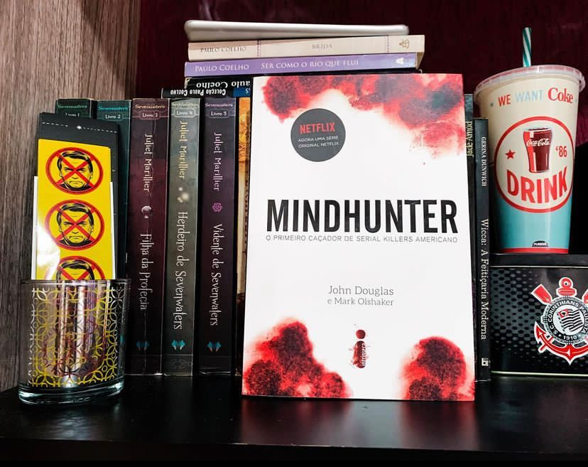

Mindhunter: O Primeiro caçador de Serail Killers Americano
(John Douglas e Mark Olshaker - Intrínseca)
⭐⭐⭐⭐⭐
⚠️Gatilhos: Violência física, Sexual, Psicológica e assassinato.
Mindhunter é o livro que deu origem a série de mesmo nome da Netflix e nele vamos acompanhar John Douglas por toda sua jornada no FBI e toda importância de seu trabalho em “caçar” serial Killers.
Em detalhes assustadores, Mindhunter mostra os bastidores de alguns dos casos mais terríveis, fascinantes e desafiadores do FBI. Durante as mais de duas décadas em que atuou no FBI, o agente especial John Douglas tornou-se uma figura lendária. Em uma época em que a expressão serial killer, assassino em série, nem existia, Douglas foi um oficial exemplar na aplicação da lei e na perseguição aos mais conhecidos e sádicos homicidas de nosso tempo. Como Jack Crawford em O Silêncio dos Inocentes, Douglas confrontou, entrevistou e estudou dezenas de serial killers e assassinos, incluindo Charles Manson, Ted Bundy e Ed Gein.
Douglas juntamente com seu parceiro Robert Ressler dedicou sua carreira no FBI á análise comportamental de centenas de casos criminais, através de suas entrevistas conseguiu desenvolver técnicas riquíssimas em traçar perfis psicológicos de assassinos e resolver centenas de casos.
Nessa obra somos apresentados a vida pessoal de John Douglas e um resumo de sua biografia até ele trilhar o caminho como agente do FBI, essa contextualização é importante para situar o leitor em como um homem que queria cursar veterinária se tornou um caçador de serial killers.
Percebe-se que a série é bem fiel ao livro e tirando algumas liberdades criativas da obra audiovisual notamos que a personalidade de Douglas se assemelha muito a do personagem Holden e muitas coisas que vemos nas telas realmente aconteceram na vida real.
O livro é pesado, cheio gatilhos e vamos conhecer a história dos mais infames Serial Killers dos Estados Unidos, detalhes dos crimes e suas motivações por isso recomenda-se a descrição do leitor.
Indico a obra para todos os fãs de true crime que não tem medo de entrar na mente dos piores assassinos do mundo!